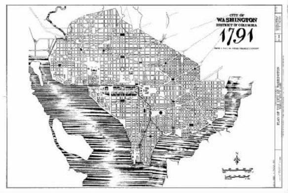
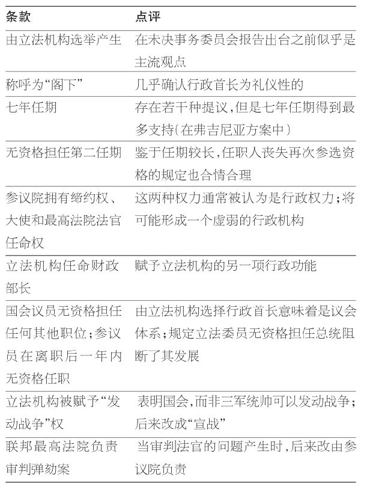
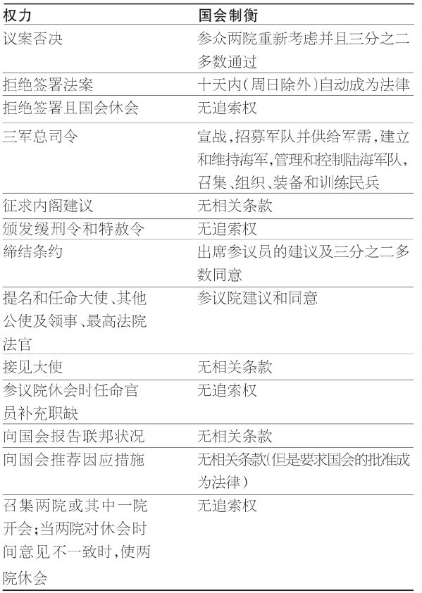
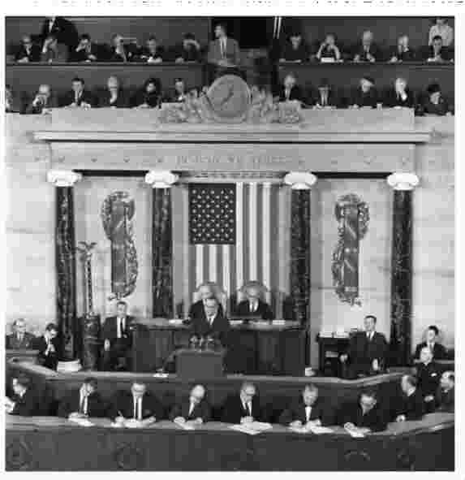

在新政府中设立总统制还需要回答两个与地理位置相关的问题：首都位于哪个城市？总统本人在哪里生活和工作？此外，还有一个关系到长远政治利益的问题：这个新生的行政机构如何与其他分支配合工作？
如后来所发生的，制宪会议在评议中逐渐形成的那个分立原则似乎能对这三个问题予以回应。首都将坐落于一个中心位置，差不多处于北部和南部的中间地带。国会和总统的办公地点将在这个城市中隔开一段距离，由一片沼泽隔开两座建筑。除非无法在选举人团中获取多数支持，总统候选人们无须通过国会投票来取得胜利。虽然他们在所获得的授权方面是互相依赖的，在选举方面却将彼此独立。
今天，前往华盛顿特区的访客也许很难相信，乔治·华盛顿就任美国首任总统之时这座城市尚不存在。1789年4月30日，华盛顿在联邦大厅阳台上作了就职宣誓，这个大厅位于纽约华尔街与百老汇街交汇处。然而，纽约并非行政首长的长久的就职地点。
为确立政府的永久工作地点，早期曾经发生过一场争论。多位国会议员曾经提议将他们自己的州或地区作为首都。1790年7月最终通过的《首都选址法》决定，沿波托马克河边划定区域设立首都，并授权华盛顿总统任命专门委员来确定具体地点。同时，政府将在1790年12月离开纽约迁往费城，直至1800年再迁往新址。随后，位于中心位置的崭新的“联邦城”（Federal City）将担负国家首都功能。
首都选址的首要问题业已解决，接下来待决定的便是首都在波托马克河畔的精确位置以及城市的设计问题。马里兰州划出了河东北部的土地，弗吉尼亚州则划出河西南部的土地（并未使用，这一部分日后被弗吉尼亚州收回）。华盛顿总统选定了具体地点，从弗吉尼亚州亚历山德里亚开始横跨波托马克河，与弗农山庄相距不远。此后，他委任曾在大陆军服役、出生于法国的工程师皮埃尔·查尔斯·朗方少校来规划设计联邦城。

图2.1 朗方少校设计的“联邦城”，随后以乔治·华盛顿之名命名。（国会图书馆图片与摄影部）
朗方的设计并未得到全面的采纳，并且华盛顿在中途解雇了这个容易激动的设计者（“朗方”在法语中是“孩子”的意思）。但是，当代的大多数人还是能够从朗方的最初设计，包括宽阔的街道、开放的空间区域以及错落有致的斜线网格中，看出今天华盛顿特区的样子。正如制宪会议希望避免权力集中，联邦城并未给政府留出中心区域。“朗方的设计在物理空间上分开了权力，有意或无意地对这一政治观念给出了一个地理性的表达。” [16]
新首都设立三大政务中心，分别是国会、总统府和位于司法广场（尽管最高法院从未坐落在那里）的法院。行政分支和立法分支相隔最远（超过一英里），法院位于二者之间。这种分隔很容易培养出大为不同的社区，这种趋势在早期就已出现，并且随着国会和行政机构工作人员的增加而持续了下去。 [17] 实际上，各分支之间的距离使得各社区可以互不妨碍地发展，不过这种局面在沼泽被抽干之后就不复存在了。
按照设计方案，最初被称为“总统府”的建筑既是居住地点也是工作地点。这座建筑也被称为“行政大厦”，在詹姆斯·麦迪逊和詹姆斯·门罗任期中开始被称为白宫。“白宫”这个名字的来源尚有争议。 [18] 最有说服力的解释是，1812年，它被战争的大火严重毁坏，重建后被粉刷成白色。
因此，关于任职处所的第一个问题和第二个问题的答案是，总统官邸将设置在一个被指定为首都的新城市，并与国会隔开一段距离。1790年，这个城市以首位总统之名命名，这是由华盛顿任命的三位专门委员作出的决定，他们协助华盛顿在波托马克河岸确定了新首都的地址。有趣的是，华盛顿从未居住在这座以他的名字命名的城市里。他是唯一一位从未在白宫居住的总统。当首位入住的总统约翰·亚当斯发现白宫透风、潮湿并且没有洗澡间的时候，华盛顿如果知道，一定感到庆幸。
关于政府中总统位置的第三个问题，其答案最初依赖于宪法第二条规定的行政分支的框架。对于行政首长，制宪会议存在三种明显不同的观点：（1）绝对总统制 （presidential presidency），行政机构主导的分支；（2）国会总统制 ，行政机构由国会遴选并因此依附于国会；以及（3）分权总统制 ，行政分支和立法分支分享并竞争权力。
亚历山大·汉密尔顿是绝对总统制的主要倡导者。他提议行政首长应该被称为“总督”（Governor），并且只要“品行正当”便可得到选举人选举，实际上是一种终身制。总督将具有绝对的否决权、身为总司令的全部权力、不受节制的主要部门人事任命权，以及在参议院“建议与赞许”下的缔约权。
如果这项方案得到通过，美国由谁来主事就没有多少疑问了。如后来所发生的，没有必要进一步考虑这个问题。在制宪会议上，汉密尔顿的方案很少或基本没有受到支持，因此算不上一个持久的视角。唯一的后续发展便是汉密尔顿本人，他被任命为华盛顿总统班底中的财政部长，任职超过五年，并持续地支持强有力的行政机构。
同样的结论却不适用于国会总统制和分权总统制的观点。制宪会议上，前一种观点得到反联邦党人强有力的拥护，他们一直警惕权力过大的行政首长和居于主导地位的中央政府。实际上，在1787年8月6日细则委员会向代表们提交的系列议案中，主要体现的是国会的主导性。国会将遴选行政首长，并具有某些行政功能（例如，参议院拥有缔约权）。
遵循这些思维的大多数议案都朝着使行政机构更加独立的方向进行了修改，这样的行政机构尽管不如汉密尔顿提议的强大，却更加独立于国会。然而，确定的一点是，那些害怕过于强大的行政机构的人们将会一直密切关注总统如何解读并运用其权威。实际上，从1787年至今，国会权力和总统权力之间的平衡一直是辩论的重点（例如，2006年小布什任期内，政府对恐怖主义嫌疑分子的通讯进行的监控）。
行政权力的最终版本采用了分权总统制，即独立选举产生行政首长，但是行政机构分享某些独立于国会的权力。这是三种模式中最具试验性的，因此也是随着时间推移最取决于解释的一种。重要的事件和人物将很容易影响这个没有先例的总统制的发展，正如对行政机构与其他分支协调运作的要求也很容易影响它的发展。这里体现着该项实验的胆识，即机构权力的分立既要足以防止专制，同时又不至于导致陷入僵局。
本来还有什么其他选择？表2.1显示了细则委员会在1787年8月6日向制宪会议提出的关于行政分支的建议。这些建议与制宪会议的最初章程一致，即修改而不是抛弃《邦联条例》。其中几个提议也和会议代表作为出发点的弗吉尼亚方案所包含的方案相似。
表2.1 本来可能选择的国会总统制：细则委员会报告中的行政首长相关条款

来源：汇编自细则委员会报告，见Charles C.Tansill，Documents Illustrative of the Union of the American States（Government Printing Office，1937），471-82.
8月6日的方案本来会创设国会总统制，本来不会有权力分立。国会遴选总统和财政部长；参议院任命大使和最高法院法官。以“阁下”称谓的总统只能任职一届七年。参议院任命的最高法院负责审判弹劾案。国会被赋予“发动战争”的权力；参议院负责“缔结条约”。
奇怪的是，这份报告居然包括一项禁止国会成员担任行政职位的条款，并且禁止参议员在离职一年之内担任这类职位。这一议案与通常从议会中任命部长的议会制体系有所不同。支持这一限制的会议代表，急切地想避免国会成员进行职位分赃而形成小阴谋集团。但是，这项安排却允许总统们选择其朋友和熟识之人担任相关职位，长久来看，这些人无须明确地接受国会问责，便可以获得显著的权力。
按照细则委员会的规定，国会将限定出总统在政府中的位置。一旦政党得以形成并发展成熟，其立法机构中的成员将遴选总统，并试图影响其人事任命。总统反过来将对其政党或政党联盟负责，这大致和英国的状况一样。除了得自所属政党的公共身份之外，总统并没有从选民中获得支持的独立基础。尽管如此，他们还是被限制为只能担任一届七年任期。
开国元勋们本有可能创造的是国会总统制，比邦联中规定的行政机构稍强一些，但不会创设一个足以满足分权政府标准的充分独立的行政机构。然而，这个早期方案显示出许多杰出代表对拥有一个强大、独立的行政机构的踌躇。因此，早期的总统们都已明了，要小心翼翼地界定自己的权位，如履薄冰地施展权力。
从1787年整个8月到是年9月，制宪会议步履维艰地向创设一个较少依赖于国会的行政机构迈进。在行政分支中创设一个手握重权且独立选举的总统职位，也许是新政府最为突出的特征。然而，如表2.2所显示，行政机构并没有被强化到汉密尔顿所向往的完全自决的程度。否决权可以被推翻，缔约需要参议院三分之二多数支持，重要的人事任命需要听取参议院的建议、得到其同意，并且作为三军统帅，总统需要从国会得到支持才能发动战争、支持并维持军队。
表2.2中所列的制衡措施足够严格，但是其目的并不仅仅是否定性的。开国元勋们正在塑造一个相互依赖的法律制定体系。体系的每一部分都支持并且推动其他两个部分的运转。制衡原则鼓励双向的磋商。在某些情况下，如缔约权和人事任命权，宪法甚至要求总统倾听来自参议院的“建议”。但是，深谙政治之道的总统们会意识到与国会山同僚进行沟通的必要性。如果他们希望自己推动的立法能够得到起草和通过，他们就需要得到沼泽彼岸国会山的支持。同样，如果国会成员希望自己的目标得到总统的支持，这些目标也需要对总统有利从而避免被否决。政党能够推动这种联系。同时，总统和国会二者都必须警惕最高法院关于所达成协议之合宪性的判决。
1789年，当这个经过修正的政府开始运行时，人们并不确定这种权力分配的混合体系能否运转以及如何运转。在相当程度上，它依赖于各种事件来检验这种“互锁”体系的应对能力。宪法第二条关于行政机构的寥寥数语对总统之角色提供的启示极少。有太多的东西没有写成文案或未加具体规定。大量的工作留待来日完成。
表2.2 分权总统制：权力和制衡（宪法条款）

来源：作者根据美国宪法条款汇编。

图2.2 分权总统制的特征之一——向国会发表国情咨文演说。
因此，举例来说，人们最初大概很难预测到，总统向国会提交国情咨文并提出因应措施供其考虑的义务竟然具有关键的议程设定功能。最初大概同样不明显的是，行政机构将扩展到如此巨大的规模，并因此挑战着总统的管理能力和国会的监督能力。可能被预见到的是多样性，即后继总统们在使自己胜任这个职位时所表现出的风格、技能、适应性和智慧。并且，显而易见的是，权力的分配与模棱两可的权力界定，意味着总统将必须在华盛顿内外的权力网络中不断地定位和重新定位自己。这个权力网络最终将包括，数以千计拥有私人利益的游说群体、数量庞大的媒体机构、非政府“智库”、外国政府和国际组织的代表等——在最初，这一点完全不明显。
宪法及其创设的政府要想延续下去，将会不可避免地出现两类治理群体，即来去匆匆的群体和驻留此间的群体。经由选举产生的政治人物及其助手大多组成第一个群体——近几十年来，这个一般化结论已经发生变化，因为国会山有很多人会重复任职。终身任职的法官和文官大多组成了第二个群体。第一个群体伴随新州的加入而适度增长；第二个群体，特别是文官和技术官员，则呈现指数增长态势。这样的增长是一个走向成熟的政府在社会中发挥功能的本质要求。
一般而言，国内的期望是当选官员掌管全国政府。对来到华盛顿、之后又返回原乡的人们而言，其面临的长久考验是，向那些长期任职的人充分学习监督和管理工作的方法。对总统们而言，这个考验特别显著，因为众人对其期望甚高，并且他们是短期任职者中的最短暂者。
华盛顿开创的先例，即总统任职不超过两届，持续了152年，最终被富兰克林·罗斯福打破，他在1940年参加第三任期的竞选并成功连任。在这个时间区间里，32位总统中的9位（算上罗斯福）任职达到8年。其中，格罗弗·克利夫兰赢得两个不连续的任期（1884年竞选成功，1888年失利，1892年又重新竞选成功）。其他两位，林肯和麦金利，两次当选却双双遭到暗杀。
自从1951年第二十二条修正案获得批准，总统任职时间被限制为不得超过两个任期以来，11位总统中有3位任满两个任期（艾森豪威尔、里根和克林顿）；有一位在本书写作之时处于其第二任期（小布什总统 [19] ）。另外一位，尼克松总统，当选两次却在可能被弹劾之前辞职。
这个记录显示，43位总统中的12位（28%）曾经任职8年（一位即将完成；另一位富兰克林·罗斯福任职为12年）。8年任期等于一又三分之一个参议院任期或者4个众议院任期。 [20] 当然，大多数总统都未能任职如此之久。二战之后总统的平均任职年限（不包括小布什）是5.6年——尚不到一届参议院任期 。
总统们进入的是要由他们来负责的长期政府。在一开始，这项任务颇为棘手。随着联邦政府的规模和管辖范围的扩张，任务变得异常繁重。对于不曾在华盛顿任职的人来说，挑战尤为吓人；即使在当代，这种现象也不乏其例（最近的5位总统中，有4位来自总统本人的原乡）。
乔治·华盛顿作为首任总统面临的考验是独一无二的。“当华盛顿于1789年4月30日进行就职宣誓时，他所走向的岗位，其性质仅仅由一部从未适用过的宪法中的一些条款所描述。”他的成功并非注定。但是，按照一位著名的公共行政学者的评价，“他……是曾经担任总统职位的最称职的行政首长之一” [21] 。鉴于首次人事任命的重要性，华盛顿“在遴选新的公务官员班底的过程中表现出一丝不苟的谨慎” [22] 。两位未来总统都与华盛顿总统共事，约翰·亚当斯担任副总统，托马斯·杰斐逊担任国务卿。亚历山大·汉密尔顿则担任财政部长。制宪会议上的一位关键人物，埃德蒙·伦道夫任总检察长。这恰是激活“从未适用过的宪法中的一些条款”的一个有力的开端。
谁来担任首任总统事关重大，因为这个总统制需要华盛顿和亚当斯有可能给出的合法界定。杰斐逊则持一种不同观点，他极不支持强大的中央政府和影响力强的行政机构。从杰斐逊的总统任期到20世纪，不同总统对总统领导权角色的认知也大相径庭。一般而言，诸如经济衰退、对外战争，以及最显著的美国内战等，这些事件在确定哪位总统最为积极能动的问题上影响深远。这些事件有助于界定总统领导权，并解释了除华盛顿外历史学家们对安德鲁·杰克逊、亚伯拉罕·林肯、西奥多·罗斯福和富兰克林·罗斯福、伍德罗·威尔逊、哈里·杜鲁门以及罗纳德·里根的较高评价。
直到20世纪，总统才得到许多帮助，来把自己嵌入一个不断扩张的政府。总统作出人事任命，但是极少在白宫中获得私人的专业协助。二战之后，这种情况发生了剧烈变化。现在，总统在白宫办公室（White House Office）拥有几百名助理，总统办事机构（Executive Office of the President）的各个部、局则拥有更多的助理（见第五章）。这些数目众多的助手和支持机构在大量行政、立法和司法机构之间作为联络组织而存在，实际上就是总统在政府体系中的触手。
通常情况下，承担一份新工作，要做的不仅是读懂岗位描述，密切注意组织的增长。这里还要求进行更多微妙的考量，特别是就职之时岗位所处的地位。即将离任者所作的决策有什么影响？人们对前任的表现是否满意？针对决策和行为，人们有什么期待？一位杰出的学者还向总统们多提了一个问题：“总统们如何担负起将他们的地位融入历史的任务；这些地位是否易于根据总统制的设计来塑造？” [23]
在获得工作岗位之前，人们便应该充分考虑其真正性质和复杂性。实际上，在下定决心参加竞选时，应该问的最重要问题之一便是：为什么我想成为总统？对前面所提问题的解答应该有助于回答这个关键问题。胜选之后，总统的关注自然而然地转向调整相关安排使之符合寻求这份工作的目的。但是，选举之后，并不能将一切推倒重来。有一个组织已经存在。目的是由前任行政机构和国会设置的政策来促成的，可谓铁打的政府流水的领导权。
新总统面对挑战的例证无处不在。考虑一下，大萧条期间富兰克林·罗斯福接掌国家大权时的情形如何。对他而言，也是对国会而言，可怕的挑战迎面而来。在这种情形下，政府组织不足以应对经济和社会问题。必须建立新的机构来管理大胆且全新的政策。多位总统一上任就要应对战争遗留问题——杜鲁门面临着第二次世界大战；艾森豪威尔面临朝鲜战争；尼克松面临越南战争；小布什后的第四十四任总统 [24] 则面临反恐战争。这些总统希望达成的任何其他目标，都必须考虑到与他们所接手的战争相关的决策。
其他总统则就职于政府服务急剧扩张的时期。作为拥有大半生军旅生涯的总统，艾森豪威尔要为罗斯福“新政”和杜鲁门“公平施政”这两个社会项目善后。尼克松则继承了林登·约翰逊的“伟大社会”国内项目，这是一项一揽子政府津贴计划（例如老年保健医疗、医疗补助、联邦教育补助和食品券等），实际上，尼克松对此基本上是不支持的，至少在这些形式上不支持。
国家经济状况和联邦负债也会影响总统迈向白宫的路径选择。里根优先考虑的，是由卡特任期末期的两位数通货膨胀、失业率和利率所决定的。里根的减税方案刺激了经济，但他基本上未能削减政府支出。因此，他离任时留下了政府赤字和公共负债，这将限制其继任者的选择。由于1991至1992年的衰退，克林顿必须首先着眼于经济，也因此必须延缓其他重点关注的事项。
丑闻也会将延期效应加在新总统身上。例如，杜鲁门（任人唯亲）、尼克松（水门事件）、里根（伊朗门事件）以及克林顿（政治募款丑闻和莱温斯基绯闻），每个丑闻都影响着总统履职，并影响着下一位白宫主人对什么是必要行动的判断，大多数情况下他们会承诺去制定并执行伦理准则。
最后，一届总统任期确立的改革措施经常影响到另一总统任期。这是第七章讨论的主题。在这里只需要指出的是，改革措施（例如《战争授权法》和《国会预算和截留控制法》）一旦确立，继任总统或国会很少抛弃，即使这些措施是无效的。相反，它们会成为制度的一部分，因此必须被融合进总统的履职方式之中。
这样想想：总统们正在经历着一个他们不能创造却可以影响的历史过程。前任们遗留的问题需要他们来解决，同时，他们还要处理自己任期中发生的事件，忙于自己的议程中设定的议题。要判断如何适应角色，大可从个人登上总统大位的方式中得到一些启示。富兰克林·罗斯福、约翰逊和里根等总统以巨大的差额赢得大选，反映了公众对于变化的热切期盼。这些总统中的每一位都被公众期待着去启动大规模的纲领性变革。在获得总统大位的早期，他们被鼓励应该极度自信 。总体来看，他们的履职情况是近代历史上主要政策变革中最有成效的——罗斯福和约翰逊偏向具有扩张倾向的政府，里根则偏向于巩固性和收缩性的政府。
更为经常的是，新总统被建议做审慎 的领导人，因为公众情绪很难让人读懂。他们以微弱多数或者相对多数赢得选举，因此很难通过选举结果解读政策信息。适应环境则要求以同样的力度关注缺点和优势。以47%的平均普选得票率当选，肯尼迪、尼克松、卡特、克林顿和小布什都必须听从这个建议。有些总统没有听从。卡特（发起广泛的能源计划）、克林顿（将国民健康保险视为头等大事）和小布什（在第二任期中发起针对社会保障的主要变革），在对大规模变革的有限的政治或公众支持下，虽然奋力推进，最终却都成果有限或全无成果。
某些总统本是备位人 （custodial），他们在前任去世之后承继了总统职位。对杜鲁门和约翰逊而言，适应环境还包括要对两位广受欢迎的总统（富兰克林·德拉诺·罗斯福和约翰·菲茨杰拉德·肯尼迪）所留遗产作出敏锐反应。当然，也有观点认为应该将老布什 [25] 视为里根的继承人。有人说，他是在担任里根的第三任期。在每种情形下，继任总统必须尊重前任遗产，同时努力塑造符合其自身偏好的总统职位——这并非轻而易举之事。杜鲁门和约翰逊足够成功地凭借自身条件在随后赢得竞选；老布什则功败垂成。
在其他情形下，因为前任的丑闻，总统被寄予期望成为制度复兴者 。因为前任的丑闻（见先前的讨论），艾森豪威尔、福特、卡特和小布什便面临着将强调伦理作为优先事项。其中，在水门事件的广泛影响和尼克松总统辞职事件的影响下，福特面临的挑战最大。他面临的局限包括：他是被任命为副总统的，而非通过选举产生；在宣誓之后立即对尼克松实行特赦；以及1974年民主党在国会的多数优势大幅度增加。福特的经历赋予了“永久的考验”新的含义。
总统们面对着就如何任职作出判断的棘手任务。人们对他们的任职表现有着不同的期待，却大多寄予很高期望。最初，总统必须在解读自己的权威时审慎行事。如果表现得过于咄咄逼人，就会有一些改革措施来限制他们的权力。通观历史，总统必须调整自己，去承担与日益增长的人口、土地和官僚机构相关的较大责任。总统们如何因应变化，不可避免地会影响继任者工作岗位的性质。相应地，宪法权威、这些特权如何被解读并运用于实践、相关事件及其对治理和政府的影响，以及前任总统的表现甚至是私人行为，这些都会结合在一起勾画出总统的岗位描述，并影响公众对总统的接受程度。
正如我们将在第三章讨论的，并非所有总统都可以拥有平等的有利条件，去找到他们在政府中的位置。有些人几乎没有在联邦政府工作的经验便入主华盛顿。其他人因为机缘，或者是因为他们作为副总统所辅佐的总统死亡或辞职（迄今为止只有一例），而登上总统大位。这些情形下的每一位总统，在寻找自己的位置时都面临着一些独特的问题。